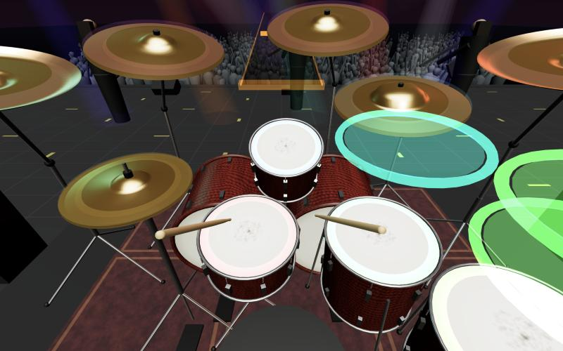
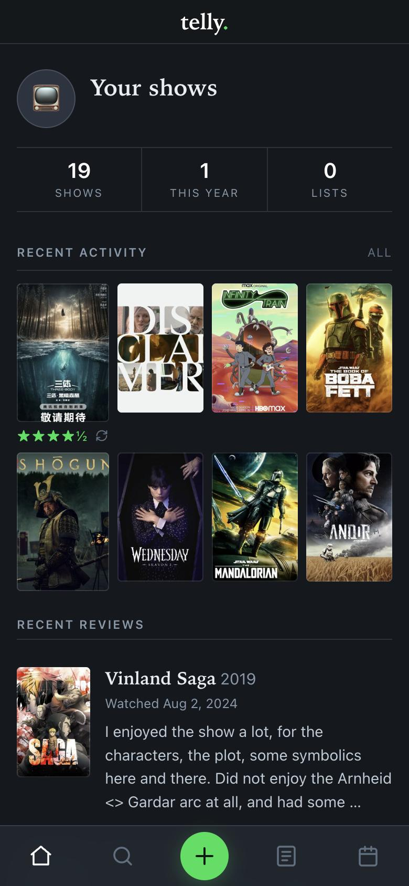
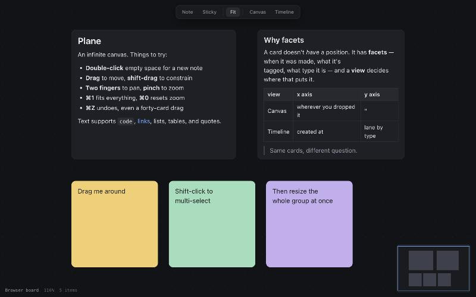
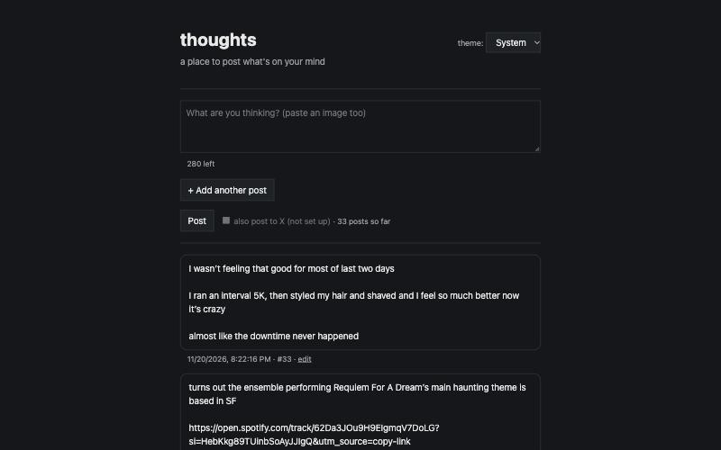

drumhero
Sit behind a real-size drum kit in VR, sticks in hand, and play along with a band and a crowd that react to how well you're hitting. It can chart your own songs from the audio.
Meta Quest, or any browser.
Most of these started as something that annoyed me before lunch. Then I kept using them.

Sit behind a real-size drum kit in VR, sticks in hand, and play along with a band and a crowd that react to how well you're hitting. It can chart your own songs from the audio.
Meta Quest, or any browser.

A diary for TV and anime: what I watched, when, and what I thought of it. Like Letterboxd for everything that isn't there.
Web and iPhone.

An infinite canvas for notes, photos, 3D models, live websites and music, all on one board. Put on a Meta Quest and the same board becomes a room you can stand in.
Mac app, with a WebXR room for the Quest.

A place to post a thought without opening a feed. Writing something down shouldn't cost me forty minutes of scrolling.
Web, Mac and iPhone.
A little retro recorder, VU meter included, that captures whatever audio an app is playing, with no microphone. I use it to save shows in Russian, Armenian and Mandarin to study later.
Mac. Open source.
A workout logger fast enough to use with sweaty hands: sets, drop sets, cardio, which gym, which machine. Every set gets a timestamp and the rest timer starts on its own.
iPhone. Syncs to my Notion when it can.
Every so often it glances at my screen and asks whether I'm still doing what I said I'd do. Over a thousand check-ins so far, which is a humbling chart.
Mac menu bar app. Screenshots stay in memory and are never saved.
A nudge at 8:30 every morning to fill in the Consensus Sleep Diary, the standard questionnaire sleep researchers use. It works out time in bed and sleep efficiency, and exports a spreadsheet.
Mac and iPhone. Answers never leave the device.